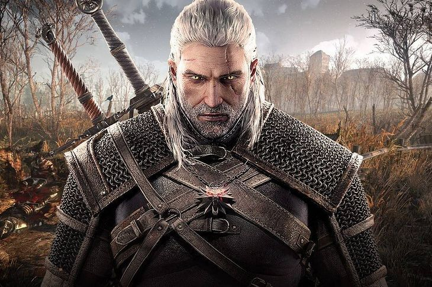
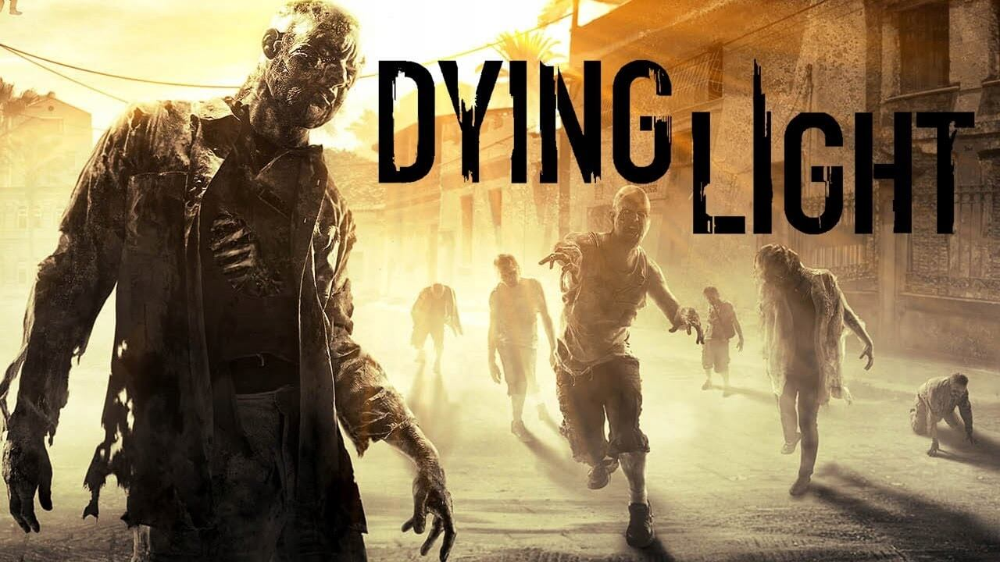

Trò chơi điện tử Ba Lan
Ba Lan không có nhiều trò chơi điện tử như Hoa Kỳ hay Hàn Quốc. Nhưng chúng tôi vẫn có một số trò chơi mà chúng tôi rất tự hào! :)
Các trò chơi điển tử của Ba Lan rất hay, nó là nguồn cảm hứng cho những người khác. Bấm vào xem thêm để xem thêm các trò chơi điện tử Ba Lan.
THE WITCHER!
The Witcher ( Trò chơi phù thủy) (Tiếng Ba Lan: Wiedźmin) là một trò chơi nhập vai hành động
năm 2007 được phát triển bởi CD Projekt Red và được Atari xuất bản trên Microsoft Windows và
CD Projekt trên OS X,
dựa trên loạt tiểu thuyết The Witcher của tác giả Ba Lan Andrzej Sapkowski , diễn ra sau các
sự kiện của câu chuyện chính. Câu chuyện diễn ra trong một thế giới giả tưởng thời trung cổ
và theo chân Geralt of Rivia, một trong số ít thợ săn quái vật du hành có sức mạnh siêu
nhiên, được gọi là Witchers.
Trò chơi sử dụng Aurora Engine độc quyền của BioWare. Vào năm 2009, một phiên bản console,
The Witcher: Rise of the White Wolf,
đã được lên kế hoạch phát hành sử dụng hệ thống chiến đấu và động cơ hoàn toàn mới.
Tuy nhiên, nó đã bị tạm ngưng do vấn đề thanh toán với các nhà phát triển bảng điều khiển
Widescreen Games.
Hai phần tiếp theo đã được phát hành: The Witcher 2: Assassins of Kings vào năm 2011 và The
Witcher 3: Wild Hunt vào năm 2015.
Nguồn: wikipedia.com
Dying Light
 Dying Light là một trò chơi phiêu lưu hành động kinh dị sinh tồn với góc nhìn thứ nhất, được
phát triển bởi xưởng game Ba Lan Techland và được xuất bản bởi Warner Bros Interactive
Entertainment.
Được công bố vào tháng 5 năm 2013, nó được phát hành vào tháng 1 năm 2015 cho Microsoft
Windows, Linux, PlayStation 4 và Xbox One.
Trò chơi từng được lên kế hoạch phát hành trên PlayStation 3 và Xbox 360, nhưng sau đó đã bị
hủy bỏ do hạn chế về phần cứng.
Trò chơi xoay quanh một đặc vụ ngầm tên là Kyle Crane, người được cử đi xâm nhập vào khu
cách ly ở một thành phố tên là Harran.
Nó có một thành phố mở, bị kẻ thù xâm lược với chu kỳ ngày và đêm năng động, với các cấu
trúc có thể leo lên được hỗ trợ hệ thống parkour linh hoạt.
Chu kỳ ngày-đêm thay đổi trò chơi một cách đáng kể, khi các thây ma trở nên hung hãn hơn và
khó đối phó hơn vào ban đêm.
Lối chơi tập trung vào chiến đấu dựa trên vũ khí và parkour. Trò chơi cũng có chế độ nhiều
người chơi không đối xứng (ban đầu được đặt là phần thưởng đặt hàng trước) và chế độ nhiều
người chơi: bốn người.
Quá trình phát triển của trò chơi bắt đầu vào đầu năm 2012. Trước thông báo chính thức của
trò chơi, một số báo cáo cho rằng Dying Light là phần tiếp theo của Dead Island,
một nhượng quyền thương mại khác do Techland tạo ra, nhưng tin đồn đó sau đó đã bị phủ nhận.
Hệ thống parkour của trò chơi đặt trọng tâm vào chuyển động tự nhiên.
Để thực hiện điều đó, Techland đã phải bỏ đi hầu hết các yếu tố câu chuyện và xây dựng lại
từ đầu.
Phần phát triển âm nhạc do Paweł Błaszczak phụ trách.
Theo anh, phần nhạc phim được lấy cảm hứng từ những bản nhạc phim thập niên 70, 80.
Khi phát hành, Dying Light nhận được đánh giá tích cực từ các nhà phê bình,
với lời khen ngợi chủ yếu nhắm vào chiến đấu, đồ họa, nhiều người chơi hợp tác, điều hướng
và chu kỳ ngày đêm, trong khi đó nó còn nhận được nhiều lời chỉ trích liên quan đến cốt
truyện, về
độ khó và các vấn đề kỹ thuật. Trò chơi là tựa game bán chạy nhất trong tháng 1 năm 2015 và
phá kỷ lục về doanh thu tháng đầu tiên cho một tài sản trí tuệ kinh dị sinh tồn mới.
Techland thông báo rằng họ sẽ cam kết với trò chơi sau khi phát hành. Do đó, vào tháng 5 năm
2015, họ đã tạm dừng một dự án khác để tập trung vào việc phát triển sau khi phát hành Dying
Light.
Nhóm đã phát hành nhiều bản cập nhật và hai gói nội dung có thể tải xuống (DLC), đó là
Cuisine & Cargo và The Bozak Horde.
Một bản mở rộng, có tên Dying Light: The following, cũng đã được công bố và được phát hành
vào ngày 9 tháng 2 năm 2016.
Dying Light là trò chơi điện tử Ba Lan được sản xuất bởi Techland
Call of Juarez: Gunslinger

Call of Juarez: Gunslinger là một trò chơi điện tử bắn súng góc nhìn thứ nhất theo chủ đề
phương Tây,
là trò chơi thứ tư trong loạt phim Call of Juarez. Được công bố tại PAX 2012, nó được phát
hành vào ngày 22 tháng 5 năm 2013,
thông qua PlayStation Network, Steam và Xbox Live Arcade. Không giống như người tiền nhiệm
Call of Juarez: The Cartel,
Call of Juarez: Gunslinger quay trở lại bối cảnh Old West truyền thống và có ba chế độ chơi
độc đáo (cốt truyện, arcade và đấu tay đôi) trong khi bối cảnh là câu chuyện cuộc đời của
một thợ săn tiền thưởng tên là Silas Greaves.
Vào ngày 30 tháng 3 năm 2018, trò chơi (cùng với The Cartel) đã bị xóa khỏi Steam, Xbox Live
và PlayStation Network trong thời gian ngắn do tranh chấp xuất bản với Ubisoft.
Trò chơi xuất hiện trở lại trong các cửa hàng vào tháng 4 năm 2018 với nhà phát triển
Techland là nhà phát hành duy nhất.
Phiên bản Nintendo Switch được phát hành vào ngày 10 tháng 12 năm 2019.
Call of Juarez: Gunslinger là trò chơi Ba Lan được sản xuất bởi Techland
Shadow Warrior 2

Shadow Warrior 2 là một trò chơi điện tử bắn súng góc nhìn thứ nhất được phát triển bởi
Flying Wild Hog và được xuất bản bởi Devolver Digital.
Đây là phần tiếp theo của Shadow Warrior 2013, bản khởi động lại của bản gốc năm 1997.
TTrò chơi đã được phát hành cho Microsoft Windows vào tháng 10 năm 2016 và cho PlayStation
4, Xbox One vào tháng 5 năm 2017 và Xbox Game Pass vào tháng 12 năm 2018.
Shadow Warrior 2 là trò chơi Ba Lan được sản xuất bởi Flying Wild Hog
Trang Phim ảnh sẽ được cập nhật mỗi tuần
Được viết bởi
@Justyna